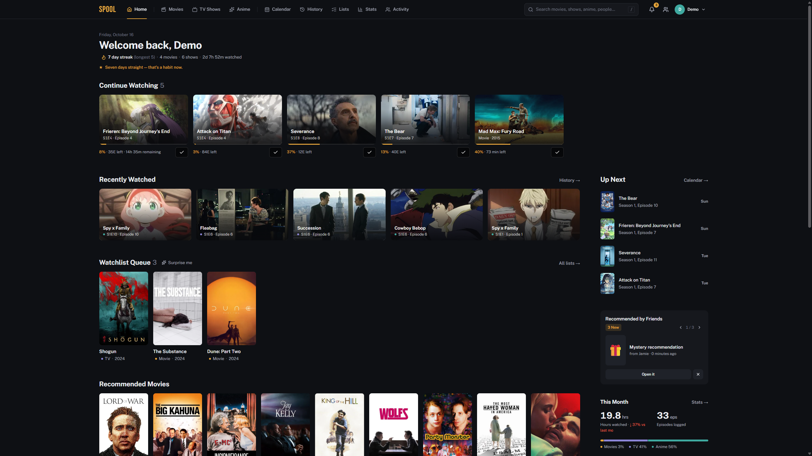
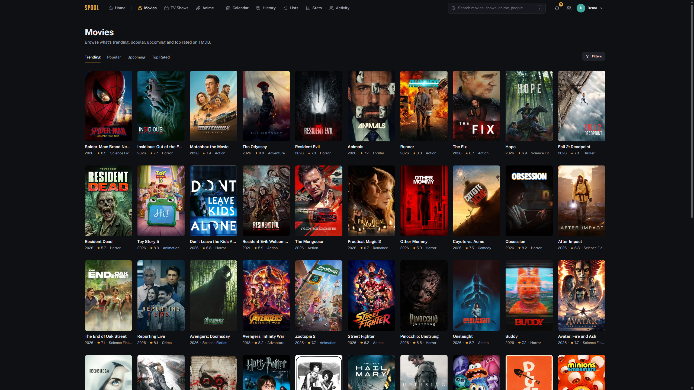
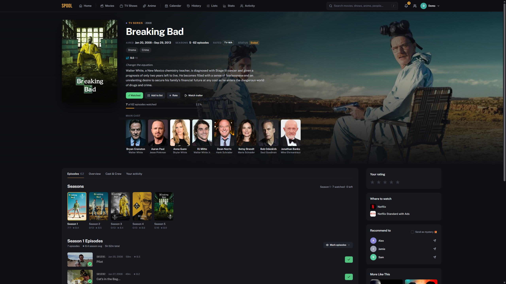
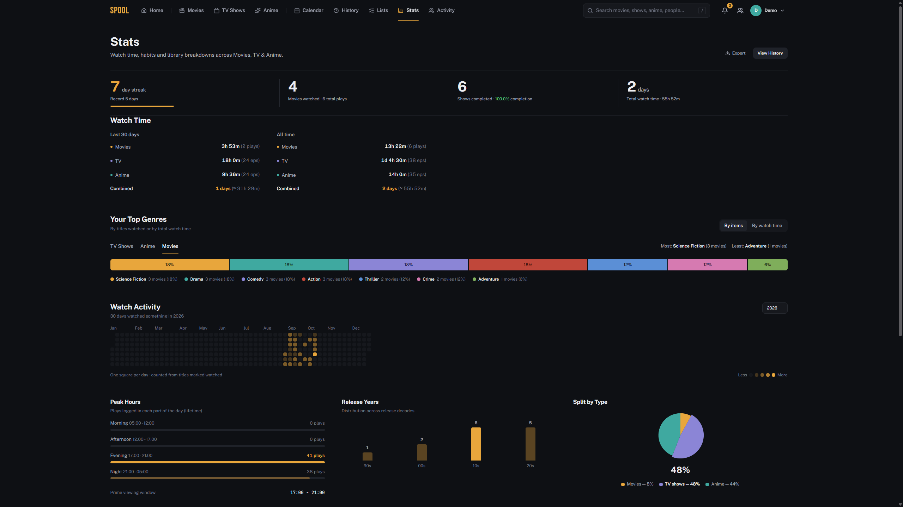
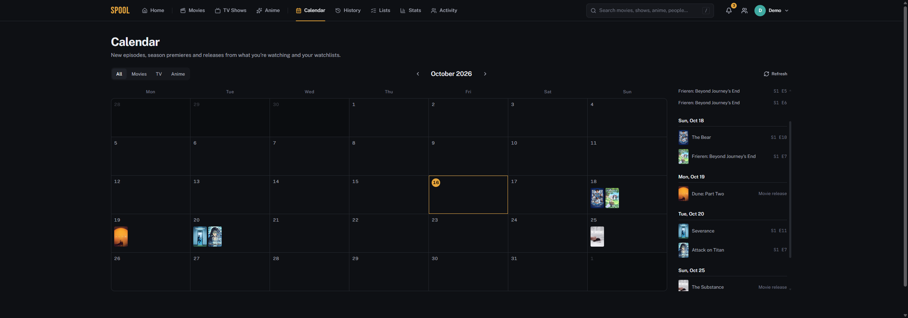

Your household's own Trakt — movies, TV & anime, tracked on a server you own. Self-hosted, Docker Compose, five containers, running in minutes.

No accounts to pay for, no data leaving your own server.
Continue watching, up next, watchlist, and personalized recommendations — one page, no digging.
Trending, popular, upcoming, and top rated — live from TMDB, with trailers, media galleries, and Watching/Watchlist/History tabs.
New episodes, season premieres, and movie releases synced nightly for anything you're tracking.
Shared and private lists, plus "Surprise me" to jump to a random title from your watchlist.
Watch streaks, genre/year breakdown, an activity heatmap, achievement badges, and taste compatibility with other profiles.
Send a title to another profile — including as an anonymous "mystery" recommendation.
Score, studio, source, and filler/recap badges from MyAnimeList, with automatic season-numbering reconciliation against TMDB.
A day-grouped timeline of everyone's watches, binges, and list activity, with a leaderboard.
OAuth or email/password connect with a daily background sync, or import a CSV export with column-mapping and a preview step.
Scheduled, per profile, to a server folder, WebDAV (Nextcloud/NAS), Google Drive, or Dropbox — plus a one-off full export/import.
TOTP via any authenticator app, QR or manual setup, and one-time backup codes.
A generic webhook for any player or script, plus a read-only API for external tools like spool-wrapped.
Every household member gets their own history, lists, and stats on one shared instance.
Five containers — app, worker, scheduler, Postgres, Redis. One command to run it all.
Real renders against seeded demo data — nothing mocked up.




The whole install — no separate app-server setup.
git clone https://github.com/aljaz-h/spool-tracker.git
cd spool-tracker
./setup.sh # or .\setup.ps1 on WindowsWrites a working .env (random secret key + DB password, prompts for your hostname) and brings the stack up. See the Quick start guide for manual configuration, Trakt/Simkl setup, and deploying without cloning the repo.